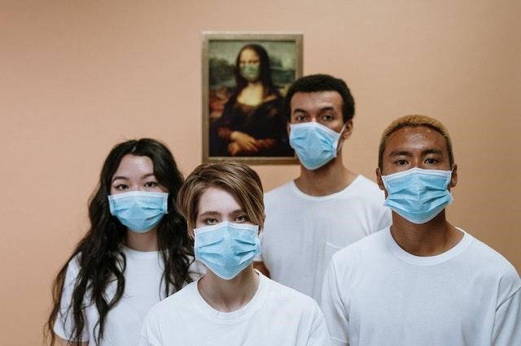
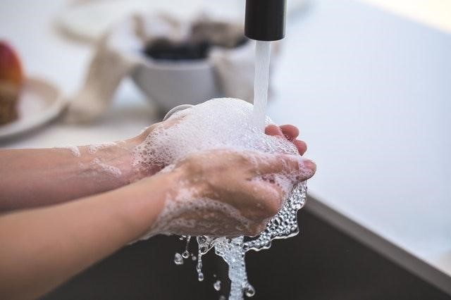

Preventive Measure
Wash your hands often and with alcohol or soap.
Keep your home ventilated when you are at home.
Always wear a mask when traveling.
Go to crowded places as little as possible and avoid public places.
Keep a certain distance from others to prevent the spread of the virus.
Cover your mouth with paper when coughing or sneezing. And throw it in the trash in time.
Follow the advice of local countries and governments to get vaccinated in time.
Mask
It is necessary to wear a mask, and it is always necessary to wear a mask indoors in public areas. Can greatly reduce the risk of getting infected with COVID-19. Wearing a mask protects against COVID-19 by preventing the virus from entering the body through the mouth and nose. Wearing masks is especially useful for children and unvaccinated people.
Personal cleaning
We need to use soap or at least 60 percent alcohol-based hand sanitizer, and we need to wash our hands for at least 20 seconds to be effective. This can be very useful in defending against COVID-19.
